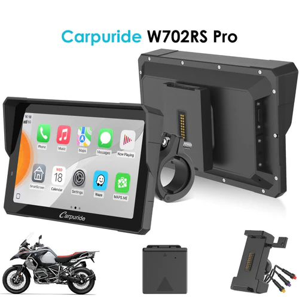
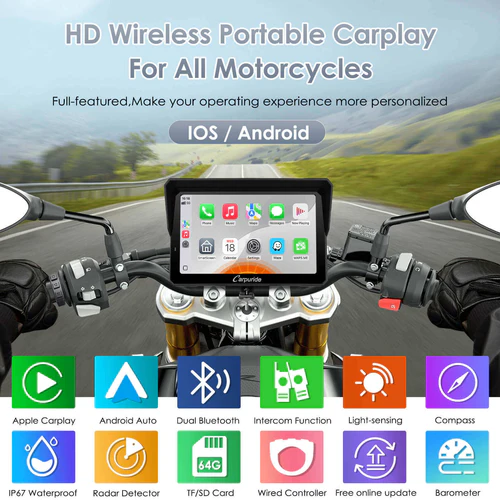
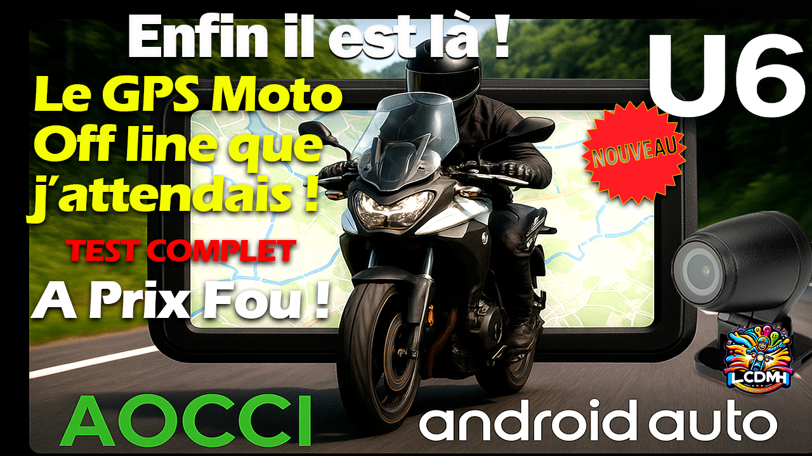
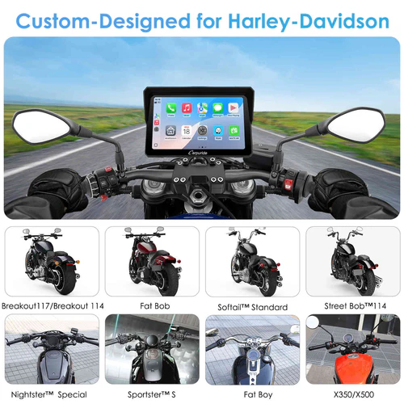

Quel Carpuride Moto Choisir : Mon Guide Complet (2026)
Tu cherches quel Carpuride moto choisir ? Après avoir testé le Carpuride 702 Pro sur la route et comparé plusieurs solutions d'écrans déportés, je te partage mon retour d'expérience terrain. Entre les Carpuride classiques et leurs concurrents comme Aocci, voici tout ce qu'il faut savoir avant de faire ton choix.
🎯 Ma réponse directe : quel Carpuride moto choisir selon ton usage
Si tu me demandes directement quel Carpuride moto choisir, ma réponse dépend de tes besoins :
Pour un usage basique : Carpuride 702 Pro
Le Carpuride 702 Pro reste une solution correcte si tu veux juste répliquer Android Auto sur un grand écran 7 pouces. Je l'ai testé en conditions réelles et il fait le job pour environ 180€ avec les remises. Il démarre en 25-30 secondes, se connecte facilement à ton intercom, et l'écran reste lisible même en plein soleil.
Pour plus de fonctionnalités : regarde ailleurs
Après mes tests comparatifs, si tu cherches quel Carpuride moto choisir avec plus de fonctions (dashcam, TPMS, GPS autonome), les alternatives comme les Aocci U6, BX ou C6 Pro offrent un meilleur rapport qualité-prix.
🔍 Tu veux comparer les 4 modèles Carpuride phares en détail ? Spécifications écran, TPMS, radar BSD, puissance, résolution : voir le comparatif Carpuride W702 vs W702 Pro vs S Pro vs 702RS Pro.
🏍️ Mon retour terrain sur le Carpuride 702 Pro

J'ai testé le Carpuride 702 Pro sur plusieurs sorties, et voici mon analyse sans filtre :
- Écran 7 pouces : vraiment agréable, plus grand que l'écran de ta moto
- Réactivité correcte avec les gants, même en roulant
- Son excellent dans le Sena 50S, qualité HD
- Connexion stable en 5 GHz avec le téléphone
- Luminosité adaptative qui fonctionne bien
- Slot carte SD pour la musique hors connexion
- Redémarrage à chaque coupure moto (micro-coupure = redémarrage complet)
- Pas de GPS autonome : tu dépends de ton téléphone
- Pas de dashcam ni TPMS intégrés
- Télécommande impossible, tout se fait sur l'écran
- Format vidéo limité (H264 seulement, pas H265)
Le point qui m'a le plus gêné : à chaque redémarrage de la moto, le Carpuride redémarre aussi. Pas dramatique, mais sur un long road trip avec plusieurs arrêts, ça devient agaçant.
⚖️ Carpuride vs concurrence : mon comparatif terrain
Quand tu te demandes quel Carpuride moto choisir, il faut aussi regarder la concurrence. Voici ma comparaison après tests :
Carpuride 702 Pro (~180€ en promo)

- ✅ Grand écran 7 pouces
- ✅ Android Auto/CarPlay
- ✅ Double intercom possible
- ❌ Pas de GPS autonome
- ❌ Pas de dashcam/TPMS
Aocci U6 (~175€ en promo)

- ✅ GPS complètement autonome (Android 14)
- ✅ TPMS + dashcam intégrés
- ✅ Fonctionne sans téléphone
- ❌ 4 câbles à débrancher
- ❌ Pas de déconnexion rapide
Aocci BX
- ✅ Déconnexion rapide (1 câble)
- ✅ TPMS + dashcam + détection angle mort
- ✅ GPS intégré
- ❌ Écran 5,5 pouces plus petit
- ❌ Dépend du téléphone pour navigation
J'ai roulé 1200 km avec le BX sur 4 jours : zéro problème, navigation parfaite. Le seul bémol : si ton téléphone tombe en panne, tu perds la navigation (contrairement au U6).
Si tu veux X → choisis Y
Pour répondre clairement à la question quel Carpuride moto choisir, voici le raccourci que j’utiliserais avant d’acheter.
- Je veux Waze en grand : Carpuride W702 Pro.
- Meilleur rapport prix/confort : W702 Pro ou W702S Pro.
- Autoroute : W702BS ou 702RS Pro.
- Voyage sans réseau : AOOCCI U6/U7.
- Dashcam + pneus + sécurité : AOOCCI C6 Pro/BX ou Carpuride 702RS Pro.
- BMW : AOOCCI BM6/BM7 ou support compatible.
Commence par ton besoin, pas par la promo. Un écran CarPlay moto est génial si tu veux garder ton téléphone protégé et lisible. Un GPS offline est meilleur si tu pars loin.
🎯 Pour quel usage choisir son Carpuride ?

Tu veux juste Android Auto sur grand écran
Le Carpuride 702 Pro fait le job. Si tu as déjà une moto récente avec GPS intégré et que tu veux juste plus de confort d'affichage, c'est suffisant.
Tu fais de longs road trips
Oriente-toi vers l'Aocci U6. Le GPS autonome est un vrai plus quand tu n'as plus de réseau. Je l'ai testé : c'est comme avoir deux téléphones, tu charges les cartes offline et tu es tranquille.
Tu veux le meilleur compromis
L'Aocci BX avec sa déconnexion rapide reste mon chouchou. TPMS, dashcam, détection angle mort, et tu débranches en 30 secondes. Parfait pour un usage quotidien ou voyage.
Tu fais de la moto par temps froid
Le TPMS devient indispensable. Quand tu roules à 0° ou -10°, savoir que tes pneus sont à température correcte, c'est sécurisant. Aucun Carpuride classique ne propose ça.
Rare sont les motards qui vérifient la pression avant chaque sortie. Avec le TPMS, dès que tu démarres, tu vois si tes pneus perdent 300-500g. Ça m'a déjà évité des galères sur de longs trajets.
✨ Mon verdict : quel Carpuride moto choisir en 2026
Après tous mes tests, voici ma recommandation franche sur quel Carpuride moto choisir :
Si tu veux absolument du Carpuride : prends le 702 Pro, mais sache que tu paies principalement pour la marque et la taille d'écran. Pour 180€, ça reste correct sans être exceptionnel.
Si tu veux mon vrai conseil : regarde les tests AOOCCI complets (U6, BX, C3 Plus). Même prix, mais tu gagnes le GPS autonome, le TPMS et la dashcam. C'est ce que j'utilise maintenant au quotidien.
Le Aocci BX reste mon préféré : déconnexion rapide, fonctionnalités complètes, et après 1200 km de test, zéro souci. Le seul point noir : l'écran 5,5 pouces vs 7 pouces pour le Carpuride.
Quel que soit ton choix, assure-toi d'avoir Android 11 minimum sur ton téléphone (2020+). En-dessous, ça ne fonctionnera pas.
Au final, quel Carpuride moto choisir ? Si la taille d'écran est ta priorité absolue, le 702 Pro fera l'affaire. Mais si tu veux plus de fonctionnalités pour le même budget, regarde du côté des alternatives. Moi, j'ai fait mon choix : je ne me passe plus d'Android Auto au quotidien, mais avec toutes les fonctions en plus.
À lire aussi : GPS moto, CarPlay, offline et road trip
Ce hub relie les guides utiles pour comparer les écrans CarPlay moto, les GPS offline, les traceurs, les dashcams, les pneus et les préparations de voyage.